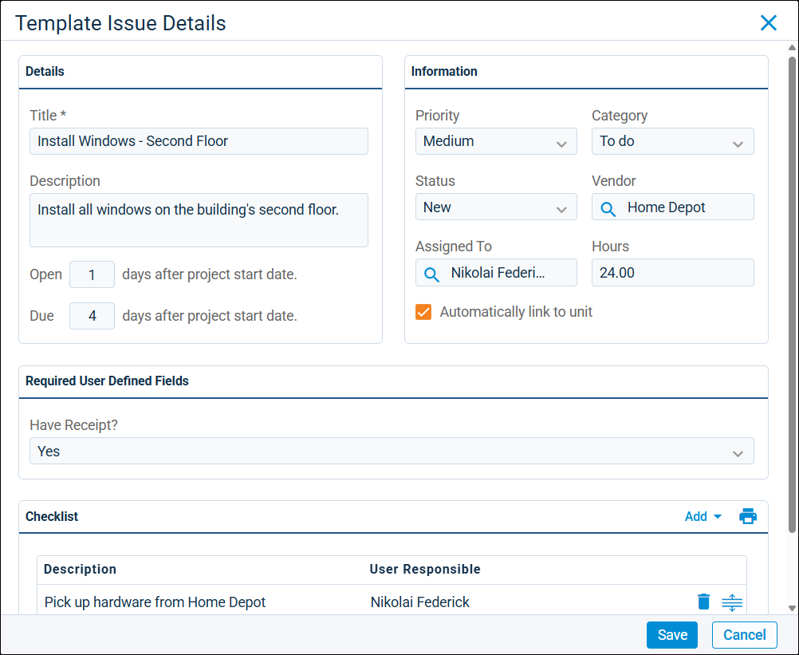

Source: https://rmxhelp.rentmanager.com/Topics/Express/CSH/Workflow-Template-Issues-Details.htm
Workflow Template Issue Details (Pop-Up)
Workflow templates in Rent Manager are reusable, pre-configured organizational tools used to create workflow projects. Each workflow template is composed of stages, which are distinct phases of the project. Each stage contains steps (service issues and/or tasks), and as each step is closed, the project progresses toward completion. When a workflow project is created from a template, it inherits these stages and steps, along with any pre-filled information and settings. You can add pre-filled issues to your workflow templates to reduce setup time and ensures consistency across similar projects. For example, if you have an established workflow for yearly maintenance work at your properties, you can create a workflow template with issues that define the scope of the work, the service tech responsible, and the time allotted to complete each step in the workflow project.
Related Privileges
| Group | Privilege | Column |
|---|---|---|
| Service Manager | Workflow Templates | View, Edit |
For more information, refer to Control User Access.
To view the details of issues in a workflow template, go to  arrow_forward Services arrow_forward Workflows arrow_forward Workflow Templates and select a template from the list. Then in the issue's row, select
arrow_forward Services arrow_forward Workflows arrow_forward Workflow Templates and select a template from the list. Then in the issue's row, select  arrow_forward Details.
arrow_forward Details.

Issue Details
In the Details tile, the following fields are available.
| Field | Description |
|---|---|
|
Description |
A brief explanation of the work required to complete the issue. |
|
Due X days after project start date |
The number of days after the project Start Date that the issue must be completed. For example, if 3 is entered, and a project's Start Date is 1/1/2026, the issue is due on 1/4/2026. Enter 0 to have the issue due the same day as the project's Start Date. |
|
Open X days after project start date |
The number of days after the project Start Date that the issue becomes available to start work. For example, if 3 is entered, and a project's Start Date is 1/1/2026, the issue is opened on 1/4/2026. Enter 0 to have the issue open the same day as the project's Start Date. |
|
Title |
The name of the service issue (e.g., Fill Out Paperwork, Check Water Meter, Change Furnace Filters, and so on). |
Issue Information
In the Information tile, the following fields are available.
| Field | Description |
|---|---|
|
Priority |
The issue priority that describes the urgency of the issue. |
|
Status |
The condition that describes the current progress of the issue, such as New or In Progress. |
|
Assigned To |
The user assigned to complete the issue. All active Rent Manager users display in this field. |
|
Category |
The classification that best describes the type of issue being created. |
|
Vendor |
The vendor associated with the work do be done on this specific issue. |
|
Hours |
The time needed to complete the issue. |
|
Automatically link to entity |
When enabled, this issue automatically links to the entity (such as property, unit, and so on) selected when a workflow project is generated from this template. This connection is displayed in the issue's Links tile. This field displays only if, in the workflow template's settings, a Workflow Template Type is selected. |
Issue Required User Defined Fields
In the Required User Defined Fields tile, issue-type user defined fields (UDFs) that must have values entered display. These values populate in the issue's UDFs when a workflow project is created from this template. This section displays only if at least one UDF is marked as required for issue-type UDFs. For more information, refer to User Defined Fields (Page).
Issue Checklist
In the Checklist tile, the following columns are available. For more information, refer to Checklist Items (Pop-Up).
| Column | Description |
|---|---|
|
Description |
An explanation of the work required to complete the checklist item. |
|
User Responsible |
The user who is assigned to complete the checklist item. |